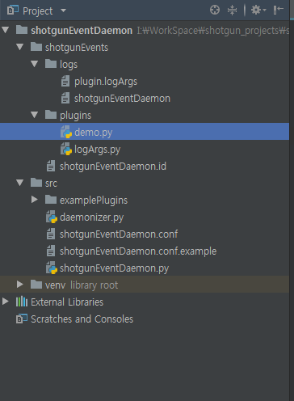
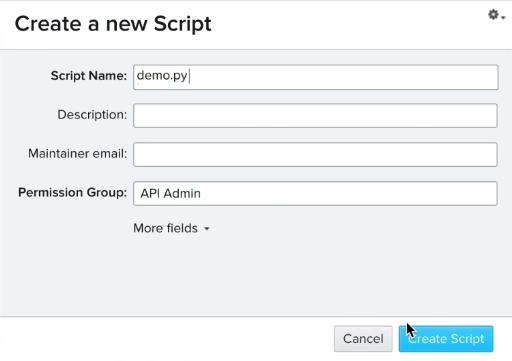
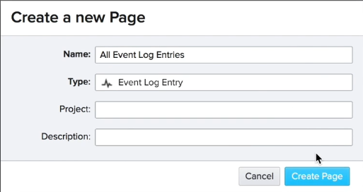
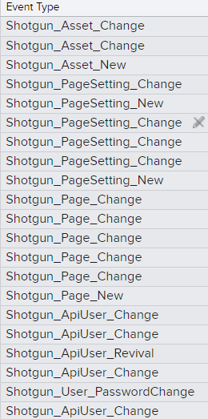
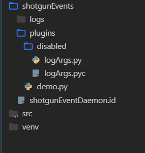
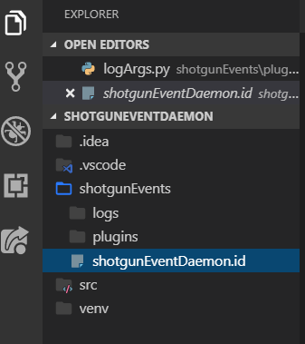
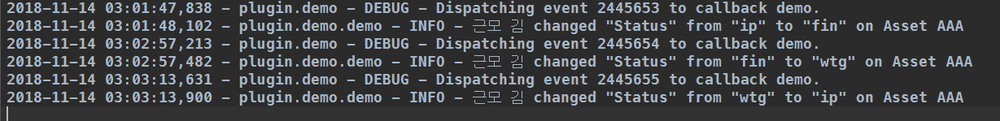

Filering for events (이벤트 필터링)
At this point you should understand how to download configure and start the daemon and how to add and test the included log argh stop py plug-in.
이 시점에서 데몬을 다운로드하고 구성하는 방법과 포함된 logArgs.py 플러그인을 추가하고 테스트하는 방법을 이해해야 합니다.
What next. our logArgs is not py plug-in here is pretty simple and mostly useless.
다음으로 logArgs.py 아주 단순 플러그인 입니다.
It runs every time something happens in shotgun and doesn't really do anything. 그것은 샷건에서 무슨 일이 일어날 때마다 작동하며 실제로 아무것도 하지 않습니다.
So how do we make sure a plug-in only runs when something specific happens in shotgun. 그러면 샷건에서 특별한 일이 일어날 때만 플러그 인이 작동하도록 하려면 어떻게 해야 할까요?
Like if someone creates a new shot or changes in asset status. 누군가 새 샷을 만들거나 자산 상태에 변화가 발생한 경우와 같이 말이죠.
Well we can accomplish that by modifying the fourth argument here which is the event filter. 여기서 이벤트 필터인 네 번째 인수를 수정하면 됩니다.
Before I do that why don't we make a copy of this plug-in and call it demo.py. 그렇게 하기 전에 이 플러그인의 복사본을 만들어 데모 UI라고 부르는 게 어때요?

Since we won't just be logging events anymore. 더 이상 사건 기록만 하지 않을 테니까요.
And I'll grab a new script key from shotgun and drop it into my environment. 샷건에서 새 스크립트 키를 가져와 환경에 놓을 것입니다.

The event filter is a dictionary that contains key value pairs where the key is the type of event and the value is an entity's field or fields. 이벤트 필터는 키와 값으로된 포함된 사전입니다. 여기서 키는 이벤트의 유형이고 값은 엔터티의 필드 또는 필드입니다.
Let's say we want the daemon to run every time anything happens to an existing asset entity. 기존 어셋 엔티티에 문제가 발생할 때마다 데몬을 실행한다고 가정해 보겠습니다.
I can just type in shotgun asset change here. 여기 샷건의 자산변화를 타이핑 할 수 있습니다.
import os
import logging
SGDAEMON_LOGARGS_NAME = "demo.py"
SGDAEMON_LOGARGS_KEY = "************"
def registerCallbacks(reg):
eventFilter = {
"Shotgun_Asset_Change": None
}
reg.registerCallback(
SGDAEMON_LOGARGS_NAME,
SGDAEMON_LOGARGS_KEY,
demo,
eventFilter,
None,
)
reg.logger.setLevel(logging.DEBUG)
def demo(sg, logger, event, args):
logger.info("%s" % str(event))
Done! But how did I know to do that. 됐습니다. 하지만 내가 그걸 어떻게 알았을까.
How did I know change to an asset would be called Shotgun_Asset_Change.
내가 어떻게 어셋에 대한 변경을 Shotgun_Asset_Change이라고 부를지 알았을까.
To answer that question let's check out the all events page on our shotgun site. 그 질문에 답하기 위해 우리 샷건 사이트의 모든 이벤트 페이지를 확인해 봅시다.
If you haven't already created an all events page you can do it by creating a new page setting the entity type to event log entry and leaving the project field blank. 아직 모든 이벤트 페이지를 작성하지 않은 경우, 이벤트 로그 항목으로 엔티티 유형을 설정하고 프로젝트 필드를 비워 두면 됩니다.

Cool! So now we're looking at a record of everything anyone has done on our shotgun site. 멋지네요. 이제 우리는 누군가 샷건 내부에 했던 모든 일을 볼 수 있습니다.
Each tiny change, users or scripts make is recorded here. 여기에 작은 변화, 사용자 또는 스크립트가 기록됩니다.
So let's see what it looks like when I make a change to an asset. 이제 어셋을 변경하면 어떻게 되는지 보겠습니다.
I'll leave this page open and navigate to my projects asset page in another browser tab. 이 페이지를 열어 두고 다른 브라우저 탭의 프로젝트 어셋 페이지로 이동합니다.
Okay so that small change should show up on the all events page. 모든 이벤트 페이지에 작은 변화가 나타나도록 합니다.
And here it is event log entities have a bunch of useful fields. 여기 이벤트 로그 엔티티가 여러 개의 유용한 필드를 가지고 있습니다.
But for now I'll draw your attention to the event type field. 하지만 지금은 이벤트 유형 필드에 주의를 기울이겠습니다.

As you can see the name of the event type is right here so I can grab it and copy it into our plugin. 보시다시피, 이벤트 유형의 이름은 바로 여기에 있습니다. 이를 가져와 플러그인에 복사할 수 있습니다.
Let's test this I'll open the shots page in my project and make a change. 이 테스트를 해보겠습니다. 프로젝트의 샷 페이지를 열고 변경하겠습니다.
Hopefully we don't see anything in the terminal. 터미널에 아무것도 없기를 바랍니다.
Oops! We do why is that. 이런! 우리는 왜 그런지 알고 있어.
Right you can see hrer that our logArgs.py plugin is still active. It reported the change.
지금 보시는 바와 같이 당사의 logArgs.py 플러그인이 여전히 활성 상태입니다. 그것은 변화를 보고했다.
Let's disable it by shutting the daemon down creating a disabled folder and moving log R is that pyn.
데몬을 종료하고 disabled 폴더를 만들고 logArgs.py와 logArgs.pyc를 이동 시킵니다.

Now we can start up the daemon with only the demo.py plugin loaded and make another change to the shot entity.
이제 demo.py 플러그인만 로드한 데몬을 실행 시킵니다. 그리고 샷 엔티티를 다시 변경 합니다.
Great nothing happens Now but if I make a change to an asset entity. 좋아요. 아무 일도 일어나지 않아요. 하지만 어셋 실체를 변경하면
Bingo! 빙고!
I'll quick aside the daemon can get confused if you disable plugins like I just did by putting them into a folder and then taking them out later. 제가 방금 한 것처럼 플러그 인을 폴더에 넣은 다음 나중에 꺼내면 데몬이 혼동될 수 있습니다.
A quick fix is to delete the event ID file here. 여기서 이벤트 ID 파일을 빨리 삭제합니다.
Of course that will blow away your event queue but that usually doesn't matter during development. 물론 그것은 당신의 이벤트 큐를 날려버릴 것이지만 그것은 대개 개발 중에 문제가 되지 않는다.

Let's get more specific if I only want the plug-in to run when an asset entity's status field changes I can add the internal code for that field here. 어셋 엔티티의 상태 필드가 변경될 때만 플러그인이 실행되도록 하려면 여기에 해당 필드의 내부 코드를 추가할 수 있습니다. I'll change the logger message to give us a bit more info about what's happening. 무슨 일이 일어나고 있는지 좀 더 자세한 정보를 주기 위해 로거 메시지를 바꾸겠습니다.
import logging
SGDAEMON_LOGARGS_NAME = "demo.py"
SGDAEMON_LOGARGS_KEY = "************"
def registerCallbacks(reg):
eventFilter = {
"Shotgun_Asset_Change": "sg_status_list"
}
reg.registerCallback(
SGDAEMON_LOGARGS_NAME,
SGDAEMON_LOGARGS_KEY,
demo,
eventFilter,
None,
)
reg.logger.setLevel(logging.DEBUG)
def demo(sg, logger, event, args):
logger.info(
sg.find_one(
"EventLogEntry",
[["id", "is", event["id"]]],
["description"]
)["description"]
)
Don't worry if you don't understand this bit yet. 아직 이 점을 이해하지 못하더라도 걱정하지 마세요.
Cool! It works. 잘 작동 합니다.

And if I need to target multiple fields I can change this to a list. 여러 개의 필드를 대상으로 지정하려면 이 필드를 목록으로 변경할 수 있습니다.
eventFilter = {
"Shotgun_Asset_Change": ["sg_status_list", "description"]
}
So now the plug-in will run if the status or description field changes. 이제 상태 또는 설명 필드가 변경되면 플러그인이 실행됩니다.
I can also add another entry here for a different event type. 다른 이벤트 유형에 대해 여기에 다른 항목을 추가할 수도 있습니다.
Maybe a shot change with the code field targeted there. 아마도 거기서 코드 필드를 목표로 한 샷 변화가 있을 것이다.
Should be enough flexibility in this event filter dictionary to capture the event or events you're interested in. 이 이벤트 필터 사전에서 원하는 이벤트 또는 이벤트를 캡처할 수 있는 충분한 유연성이 있어야 합니다.
And remember if you're ever wondering how to filter for an event just visit shotgun simulate what a user would do in the GUI to create an event log entry and then check the all events page for the event type syntax. 이벤트에 대해 필터링하는 방법에 대해 궁금한 경우, GUI에서 사용자가 이벤트 로그 항목을 생성한 다음 모든 이벤트 페이지에서 이벤트 유형 구문을 확인합니다.
For the rest of this demo I'm going to focus on asset status field changes so I'll revert these other bits. 이 데모의 나머지 부분에서는 어셋 상태 필드 변경 사항에 초점을 맞춰 다른 비트를 되돌리겠습니다.
One last note before we move on. 다음 단계로 넘어가기 전에 마지막으로.
You can register more than one register callback function here. 여기에서 레지스터 콜백 함수를 두 개 이상 등록할 수 있습니다.
So for example we could just copy this block change up the event filter and then point to a different function in the file. 예를 들어 이 블록 변경을 이벤트 필터 위로 복사한 다음 파일에서 다른 기능을 가리킬 수 있습니다.
Why would you do that. 왜 그렇게 할까요?
Well if you've got very similar plugins and you want the share code without importing modules you could consolidate them this way. 비슷한 플러그인을 가지고 있고 모듈을 가져오지 않고 공유 코드를 원한다면 이러한 방식으로 통합할 수 있습니다.
Sort of like overloading the function. 일종의 과부하 같은 거죠.
In practice it doesn't come up all that often. 실제로 그렇게 자주 나오는 것은 아니다.
Don't be surprised if you only ever use a single register call back call per register callbacks function. 레지스터 콜백당 하나의 레지스터 콜백 기능만 사용하더라도 놀라지 마십시오.
import logging
SGDAEMON_LOGARGS_NAME = "demo.py"
SGDAEMON_LOGARGS_KEY = "************"
def registerCallbacks(reg):
eventFilter = {
"Shotgun_Asset_Change": "sg_status_list"
}
reg.registerCallback(
SGDAEMON_LOGARGS_NAME,
SGDAEMON_LOGARGS_KEY,
demo,
eventFilter,
None,
)
reg.registerCallback(
SGDAEMON_LOGARGS_NAME,
SGDAEMON_LOGARGS_KEY,
demo2,
{"Shotgun_Shot_Change": "code"},
None,
)
reg.logger.setLevel(logging.DEBUG)
def demo(sg, logger, event, args):
logger.info(
sg.find_one(
"EventLogEntry",
[["id", "is", event["id"]]],
["description"]
)["description"]
)
def demo2(sg, logger, event, args):
logger.info("This is the second callback function.")